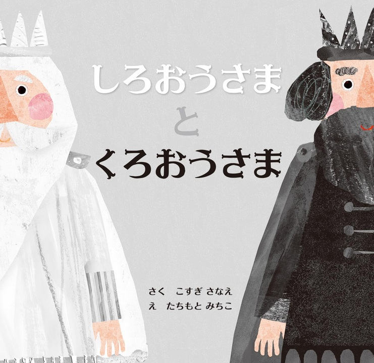

たくさんの絵本の中で たまたま読んでみて 印象に残った絵本を紹介します

あるところに白の国と黒の国がありました。 白の王様は黒いものが大嫌い、黒の王様は白いものが大嫌いでした。 白の王様と黒の王様はその間にある灰色の森には近づくことはありませんでした。 あるときその森に七人の小人がやってきて、 次々と灰色の森に色を付けて行ってしまいます。 さて、白の王様と黒の王様は…。
白でなければいけない、黒でなければいけないという変なこだわりが 自分勝手な偏見にもつながってしまう。そういった偏見を捨て 相手への思いやりを持った時に、一気に理解が深まり世界がさらに広がる という事を白と黒という色の世界で表したお話です。 現実世界の白と黒の王様にも教えてあげたいです。
白でなければいけない、黒でなければいけないという変なこだわりが 自分勝手な偏見にもつながってしまう。そういった偏見を捨て 相手への思いやりを持った時に、一気に理解が深まり世界がさらに広がる という事を白と黒という色の世界で表したお話です。 現実世界の白と黒の王様にも教えてあげたいです。